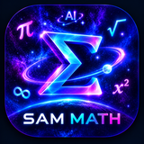

معادلهٔ درجهٔ اول
به شکل ax + b = c
جواب اینجا نمایش داده میشود.

YOUR OFFLINE MATH COMPANION
با دکمهها حساب کن؛ دنیای حساب
برای توابع مثلثاتی، زاویه بر حسب رادیان است. میتوانی از کیبورد هم استفاده کنی.
به شکل ax + b = c
جواب اینجا نمایش داده میشود.
جواب اینجا نمایش داده میشود.
مثلاً مربع ۲/۳ برابر ۴/۹ است.
مربع کسر اینجا میآید.
با روش غربال اراتستن، اعداد اول را در بازهٔ دلخواه پیدا کن (از ۱ تا ۵۰۰۰).
اعداد اول اینجا نمایش داده میشوند.
جواب اینجا میآید.
جواب اینجا میآید.
اگر a/b = c/x باشد، x را پیدا کن.
جواب اینجا میآید.
کسر را به مجموع کسرهایی با صورت ۱ تبدیل کن.
مثال: ۳/۷ = ۱/۳ + ۱/۱۱ + ۱/۲۳۱
هر جمله از جمع دو جملهٔ قبلی ساخته میشود.
۱، ۱، ۲، ۳، ۵، ۸، ...
عدد را به حاصلضرب عددهای اول تبدیل کن.
۳۶۰ = ۲³ × ۳² × ۵
جملههای یک دنباله با اختلاف ثابت را بساز.
۴، ۷، ۱۰، ۱۳، ...
برای ax² + bx + c = 0
جواب اینجا میآید.
در دنبالهٔ فیبوناچی هر جمله از جمع دو جملهٔ قبل به دست میآید: ۱، ۱، ۲، ۳، ۵، ۸، ۱۳، ...
اگر یک جمله را بر جملهٔ قبلی تقسیم کنیم، نسبتها بهتدریج به عددی نزدیک ۱٫۶۱۸ میشوند که «نسبت طلایی» نام دارد.
چالش: نسبت ۱۳÷۸ و ۲۱÷۱۳ را حساب کن. کدام به ۱٫۶۱۸ نزدیکتر است؟
در حساب پیمانهای، پس از رسیدن به یک مقدار مشخص دوباره از ابتدا میشماریم؛ درست مثل ساعت ۱۲ ساعته.
مثلاً ۱۰ + ۵ = ۱۵، اما روی ساعت ۱۲ ساعته ۱۵ ساعت بعد از ۱۰، ساعت ۳ میشود؛ میگوییم ۱۵ نسبت به ۱۲ باقیماندهٔ ۳ دارد.
چالش: روی ساعت ۱۲ ساعته، ۹ ساعت بعد از ساعت ۸ چه ساعتی است؟
یک موضوع را انتخاب کن تا توضیح و مثال آفلاین بگیری.
نکته: این دستیار در نسخهٔ فلش بدون اینترنت کار میکند و از توضیحات آمادهٔ آموزشی استفاده میکند؛ مدل هوش مصنوعی مولد آنلاین در این نسخه وجود ندارد.
پایه و تعداد سؤال را انتخاب کن؛ هوش مصنوعی آزمون چهارگزینهای میسازد. بعد از پاسخدادن، پاسخنامه و توضیح هر سؤال را میبینی.
یک پایه و تعداد سؤال انتخاب کن و آزمون بساز.
نکته: این بخش به اینترنت و سرور SAM AI نیاز دارد. سؤالها توسط هوش مصنوعی ساخته میشوند؛ پیش از استفاده در امتحان واقعی، پاسخها را بازبینی کن.
از بغداد و مراغه تا سمرقند و امروز؛ دانشمندان ایرانی و زبان فارسی سهم بزرگی در پیشرفت ریاضیات جهان داشتهاند. تاریخها میلادی و بعضی تقریبیاند.
در دورهٔ ساسانی، گندیشاپور در خوزستان مرکز آموزش و ترجمه بود. متنهای یونانی، هندی و ایرانی در آن گردآوری و به زبان پهلوی ترجمه میشد؛ از جمله آثار نجومی و محاسباتی هندی که راه را برای دانشمندان بعدی باز کرد.
ریاضیدان، ستارهشناس و جغرافیدان؛ فعال در بیتالحکمهٔ مأمون
کتاب «الکتاب المختصر فی حساب الجبر و المقابله» را نوشت. واژهٔ «الجبر» از عنوان همین کتاب وارد ریاضیات جهان شد. کتاب دیگری دربارهٔ ارقام هندی و محاسبه با آنها نوشت که ترجمهٔ لاتین آن، روش دهدهی را به اروپا برد.
میدانستی؟ واژهٔ انگلیسی «algorithm» (الگوریتم) از نام لاتینشدهٔ خوارزمی گرفته شده است.
ریاضیدان و مهندس
جبر را از حل معادلات خطی و درجهٔ دوم فراتر برد و قاعدهٔ بسط دوجملهای و ضرایب آن را بهصورت جبری توضیح داد. بعدها این الگو در اروپا با نام مثلث پاسکال شناخته شد.
ریاضیدان و منجم
جدولهای مثلثاتی را گسترش داد و توابع تانژانت و کتانژانت را وارد محاسبات کرد. در مثلثات کروی (مثلثات روی کره) نیز روابط تازهای ارائه داد.
دانشمند چندرشتهای؛ ریاضی، نجوم، جغرافیا و تاریخ
با استفاده از هندسه و اندازهگیری زاویهٔ افق از بلندی یک کوه، شعاع زمین را حدود ۶۳۴۰ کیلومتر برآورد کرد؛ عددی بسیار نزدیک به مقدار امروزی (حدود ۶۳۷۱ کیلومتر).
ریاضیدان، ستارهشناس و شاعر
معادلات درجهٔ سوم را با استفاده از مقاطع مخروطی به روش هندسی حل کرد و در کتاب «رسالهای در توضیح مشکلات جبر و مقابله» روش خود را شرح داد. در سال ۱۰۷۹ میلادی، همراه با گروهی از ستارهشناسان، تقویم جلالی را تنظیم کرد.
میدانستی؟ خیام در اروپا بیشتر بهعنوان ریاضیدان شناخته میشود، اما در ایران او را با رباعیهایش میشناسند.
ریاضیدان و فیزیکدان
با آزمایش روی یک کرهٔ شیشهای پر از آب، مسیر نور در قطرات باران و پیدایش رنگینکمان را توضیح داد. در نظریهٔ اعداد نیز به «اعداد دوستانه» پرداخت.
ریاضیدان، منجم و فیلسوف
رصدخانهٔ مراغه را اداره کرد و کتاب «الشکل القطاع» را در مثلثات نوشت؛ کتابی که مثلثات را مستقل از نجوم بررسی میکند. ابزار مکانیکی «زوج طوسی» را معرفی کرد که حرکت دایرهای را به حرکت خطی رفتوبرگشتی تبدیل میکند.
ریاضیدان و منجم در رصدخانهٔ الغبیگ
در رسالهٔ «محیطیه» مقدار π را تا ۱۶ رقم اعشار محاسبه کرد؛ رکوردی که حدود دو قرن پابرجا ماند. در کتاب «مفتاح الحساب» (کلید حساب) کسرهای اعشاری را منظم و کاربردی کرد.
میدانستی؟ کاشانی در کتاب «مفتاح الحساب» کسرهای اعشاری را به شکلی منظم و کاربردی شرح داد؛ نوشتن اعداد با ممیز اعشار در محاسبات امروز ریشه در همین کارها دارد.
ریاضیدان
نخستین زن و نخستین ایرانی که در سال ۲۰۱۴ میلادی مدال فیلدز را گرفت؛ جایزهای معتبر در ریاضیات. کارهای او دربارهٔ دینامیک و هندسهٔ سطوح ریمانی و فضاهای مدولی بود.